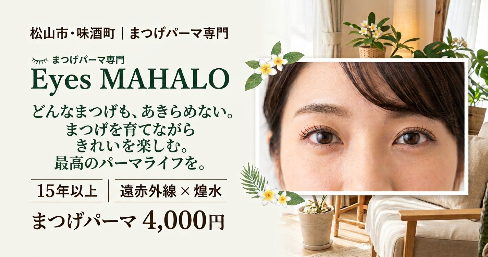
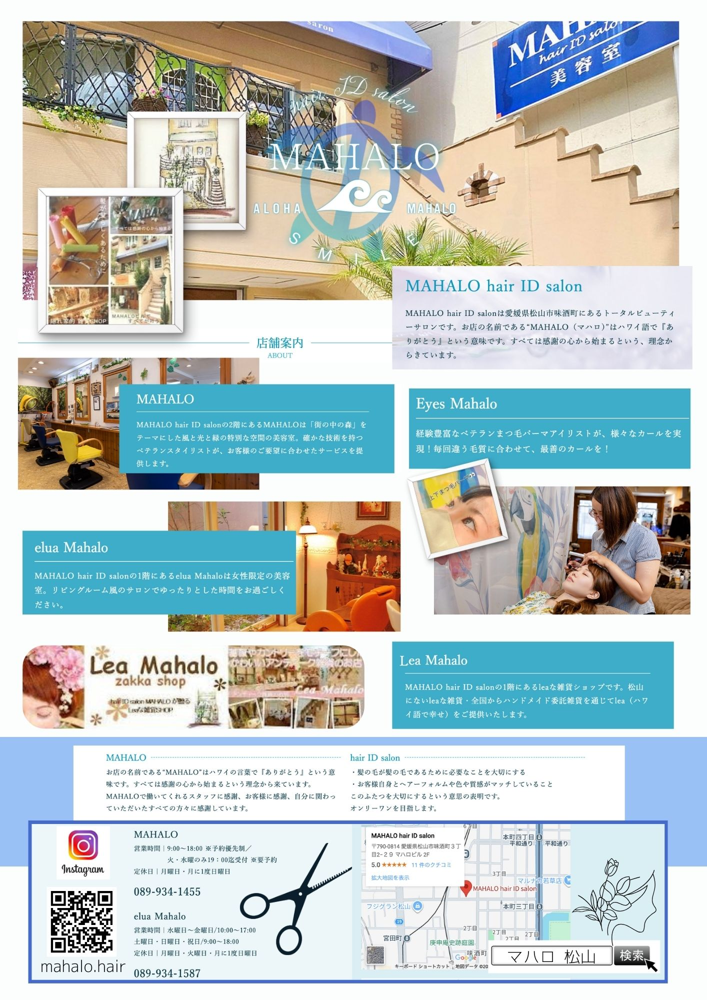

Eyes MAHALOについて
まつげの状態に合わせて、似合うカールを考えます。
Eyes MAHALOは、愛媛県松山市味酒町にある、まつげパーマ専門の施術スペースです。
まつげパーマ歴15年以上の中岡有里が、まつげの状態や生え方、目元のバランスを見ながら、似合うカールを一緒に考えます。
同じロッド、同じ強さで施術するのではなく、その人に合う仕上がりを探すことを大切にしています。
お悩みから選ぶ
こんなお悩み、ありませんか？
短い・細い
長さや毛質で、向いているロッドや仕上がりは変わります。目頭や細い毛も含め、今のまつげを確認します。
硬い・下向き
生え方や毛質でカールのつき方には個人差があります。ご希望を伺いながら、ロッドや方法を調整します。
左右で上がり方が違う
生え癖や生え替わりのタイミングで、仕上がりに差が出ることがあります。必要に応じて左右でロッドや強さを変えます。
根元からぱっちり
小さめのロッドなどで調整する方法があります。まぶたの形やまつげの長さで適した方法は変わります。
まぶたに当たるのが心配
強く上げれば理想の目元になるとは限りません。ロッドの大きさを調整し、毛先とまぶたの距離も考えます。
最初から「無理」と決めつけず、今のまつげでできることを一緒に考えます。
遠赤外線 × 煌水（キラ水）
ヘッドスパとの同時施術も人気です。
遠赤外線と煌水を取り入れたまつげパーマを行っています。まつげだけでなく、キラ水ヘッドスパとの同時施術も人気です。
「ヘッドスパも一緒に受けたい」という方は、予約時にご相談ください。
施術の感じ方や仕上がりには個人差があります。特定の美容効果を保証するものではありません。
サロンの様子
MAHALOビルの1階です。



お客様の声
初めてのサロン選びでも、相談しやすいように。
ミニモに掲載されたお客様の口コミから、一部を要約して紹介します。
松山に引っ越して初めてのまつげパーマで不安もあったが、丁寧に施術してもらえた、という声。
ミニモの口コミより（30代〜50代の女性）
根元からしっかり上げてもらえて気持ちも上がった。まつげの状態を細かく教えてもらえた、という声。
ミニモの口コミより
口コミは各サイトのお客様の個人的な感想です。すべての方に同じ仕上がりや体験を保証するものではありません。
担当アイリスト
中岡 有里
まつげパーマ歴15年以上。
短い、細い、硬い、左右差がある。さまざまなまつげと向き合ってきた経験をもとに、一人ひとりに合うカールを考えています。
前回と同じ施術がいつも最適とは限りません。大切にしているのは、最初からできないと決めつけず、今のまつげに合う方法を探すことです。
「こんなまつげでも上がるかな？」
「以前のパーマが思ったようにならなかった」
そんな相談からでも大丈夫です。
よくある質問
ご予約の前に
初めてでも大丈夫ですか？
はい。希望の仕上がりや不安な点を相談しながら、施術を検討できます。どんなカールがよいか分からなくても、お気軽にご相談ください。
まぶたが重くても、まつげは上がりますか？
まぶたの形やまつげの長さ、生え方で仕上がりは異なります。ロッドの種類や大きさを調整できる場合があるので、目元の状態を見ながら相談しましょう。
左右で上がり方が違うのはなぜ？
生え癖や毛質、生え替わりのタイミングが左右で違うためです。状態に応じて、左右で調整する方法があります。
まつげが短くても施術できますか？
長さや状態でできる施術は変わります。今のまつげを確認したうえで、可能な方法をご相談します。
根元パーマと通常のまつげパーマの違いは？
根元の立ち上がりを重視したい方、伸びてきた根元のメンテナンスを考えている方には、根元パーマが選択肢になります。
どのくらい持ちますか？
毛質や生え替わり、日々の扱い方で変わり、個人差があります。状態に合わせたメンテナンス時期をご相談ください。
月曜日にも予約できますか？
営業は予約時間のみで、ご相談に応じます。月曜日や朝・夕方の時間帯も、希望日時を添えてLINEでお問い合わせください。
親子や友人と一緒に受けられますか？
ペア施術もご相談いただけます。希望日時と人数を、事前にLINEでお知らせください。
相談だけでもいいですか？
もちろんです。メニュー選びやまつげのお悩みなど、LINEからお気軽にどうぞ。
アクセス
松山市味酒町、古町駅から徒歩3分。
- 店名
- Eyes MAHALO
（まつげパーマ専門） - 住所
- 〒790-0814
愛媛県松山市味酒町3-2-29
MAHALOビル1階 - アクセス
- フジグラン松山から徒歩約3分
古町駅から徒歩約3分 - 駐車場
- あり。場所と入口は、ご予約時にLINEでご案内します。
- 営業時間
- 予約時間のみの営業です。
ご相談に応じます。 - ご予約
- 完全予約制
ご予約・ご相談
まつげの悩みを、まずは聞かせてください。
「根元から上げたい」「自然なカールがいい」
「左右差が気になる」
「自分に合うメニューが分からない」
そんなご相談からでも大丈夫です。希望の日時があれば、メッセージに添えてお送りください。営業は予約時間のみで、ご相談に応じます。
